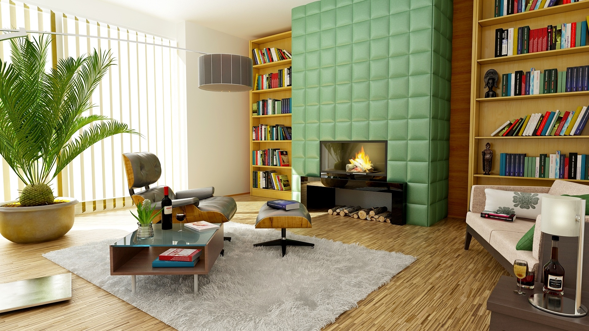

'60s Retro Style
The term retro has been in use since the 1960s to describe on the one hand, new artifacts that self-consciously refer to particular modes, motifs, techniques, and materials of the past. Nowadays, retro style refers to new things that display characteristics of the past. Unlike the historicism of the Romantic generations, it is mostly the recent past that retro seeks to recapitulate, focusing on the products, fashions and artistic styles produced since the Industrial Revolution, the successive styles of Modernity. The English word retro derives from the Latin prefix retro, meaning backwards, or in past times.

A contemporary office space is highlighted with minimal dark wood touches and angular shapes shelves.

The right chair can go a long way. This simple Thread & Wire frame chair with rose gold stems is the perfect complement to any modern decor.

With all the clean white that comes with a modern home, green accents from a lively plant can give a room the necessary pop of life. Plus, never forget the importance of natural light.